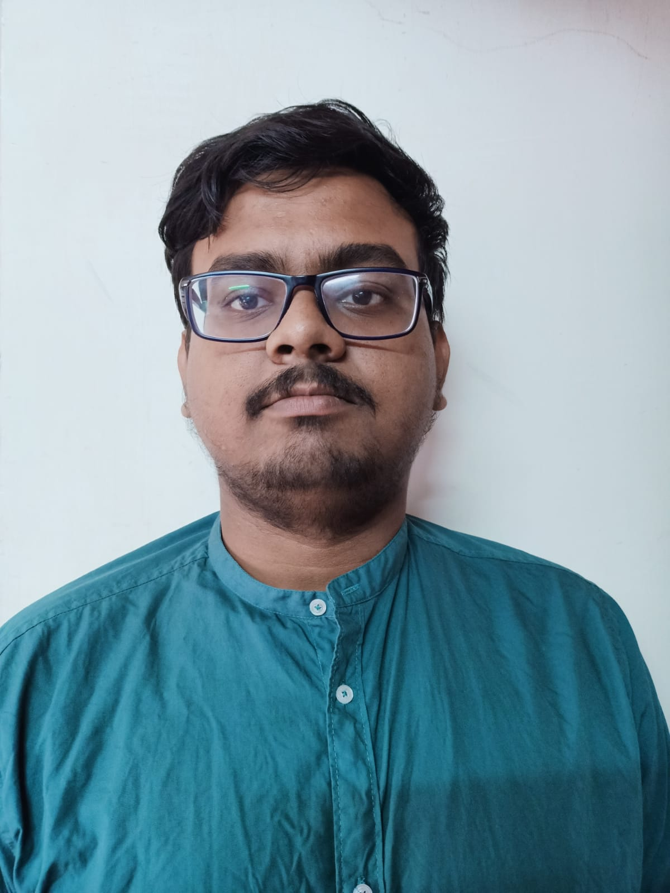

Rajarshi Biswas

About
I am an hardworking individual who takes all his work seriously and have keen interest in learning about new things.
My interest and expertise are on the fields on Statistics and Machine Learning.
In case you are interested in my hobbies , they are reading books, recitation,
learning about new skills and also new languages.
Contact Information
Education
- Master of Statistics(2023-2025)
- University: Indian Statistical Institute(ISI),Kolkata
- Marks: 66.2%
- Bachelor of Statistics(2020-2023)
- University: Indian Statistical Institute(ISI),Kolkata
- Marks: 69%
- Higher Secondary Education(2020)
- Board: CBSE(Central Board Of Secondary Education)
- Marks: 92.2%
- Secondary Education(2018)
- Board: ICSE(Indian Council of Secondary Education)
- Marks: 90.8%
Internships
- Internship Trainee: Kotak Mahindra Bank [May 13,2024-July 12,2024]
- Worked in Risk team for review of CD Bureau Hit Scorecard review and validation .
- Worked on developing a model for business Loans.
- Subject Matter Expert (Mathematics): Sci-Astra [March 24, 2023 -July 30, 2023]
- Creating educational study materials for the mathematics teams.
- Handling minor technical issues in different places.
- Content Writing: No Help Too Big [May 9,2022-July 1,2022]
- Writing for an online educational application named mystudypod.
Projects
- Prescription Audit for Pharmacology,BGMCH [March 8,2025-March 10,2025]
Given By Dr. Arunabha Biswas, HOD (Department of Pharmacology, Barasat Government Medical College and Hospital)
- Interpreting ANOVA under Dependence [October,2024-Ongoing]
Under Prof. Mandar Mitra(ISI Kolkata)
The work focuses to finding an appropriate metric to have a measure on QPP(Query Permformance Prediction).
-
Home EPO versus Incentre EPO therapy in anaemia management [March 2023-May ,2023]
Under Dr. Debasish Sengupta(ISI) & Dr. Bimal Kumar Roy(ISI) ; Given By Nephrocare Hospital, Salt Lake, West Bengal
Parametric and non-parametric methods were used to predict if the Home EPO therapy was better than in center EPO therapy or vice versa.
-
Can we believe the train schedule? [January,2023-February, 2023]
Under Arnab Chakrobarty [Professor, ISI Kolkata]; ISLP Poster competition 2023, National Ranking- 2nd]
Data about trains were manually collected. The objective was to predict the movement of trains and the amount of delays in arrival.
-
Disease Modelling [May,2022-July,2022 & June,2023-August,2023]
Under Joydeb Chattopadhyay (Professor, ISI Kolkata)
SIR model is used for predicting susceptible infected relation in a population.Insights of Mathematical Biology alongside Machine Learning algorithm were gained during the project.
Achievements
- Achieved AIR 24 in GATE Statistics (Year 2025)
- Achieved AIR 317 in GATE Data Science & Artificial Intelligence (Year 2025)
- Achieved 2nd position in ISLP poster competition National Level (Year 2023)
- Achieved AIR 78 in GATE Statistics (Year 2023)
- Attended Madhava Nurture Camp (Year 2021) Certificate
- Qualified for CIC (Delhi University) (B.Tech. in ITMI) (Year 2020)
- Qualified for IIEST Shibpur (B.Tech in Computer Science and Engineering) (Year 2020)
- Got Admission in ISI Kolkata (B.Stat) (Year 2020)
- Qualified PRMO (Year 2019)
Courses and Training
- Data Science with Python
Organisation - [FINALTICS]
Certificate: Certificate
- Supervised Machine Learning: Regression and Classification
Organisation - [COURSERA]
Certificate: Certificate
Some Class Projects
- Given By Sandip Barui [Assistant PRofessor , ISI]
Survival Analysis
This project emphasises on Child mortality data by NFHS and analysing different things on it.
- Given By Gopal Krishna Basak [Professor, ISI Kolkata]
LTCM Disaster This project is an overview of the famous LTCM disaster and precautions that could have bveen taken to prvent iot.
- Given by Shyamal Krishna De [Assistant Professor, ISI Kolkata]
Classification methods for Predicting Credit Score for a Person - This project is an application of machine learning models in literature and utilizing them to find the best model for credit score prediction.
- Given by Arnab Chakroborty [Professor, ISI Kolkata]
Making a vector map stitching satellite screenshots - This project is an application of linear model techniques in making a more useful map of a local region that can be used as a local guide.
Skills
- Programming Skills:R,C,Python,HTML,SQL
- APplication Skills:MS Office, Latex
Languages
- English: ★ ★ ★ ★ ★
- Bengali: ★ ★ ★ ★ ★
- Hindi : ★ ★ ★ ★ ☆
- Russian: ★ ★ ☆ ☆ ☆
- German: ★ ☆ ☆ ☆ ☆